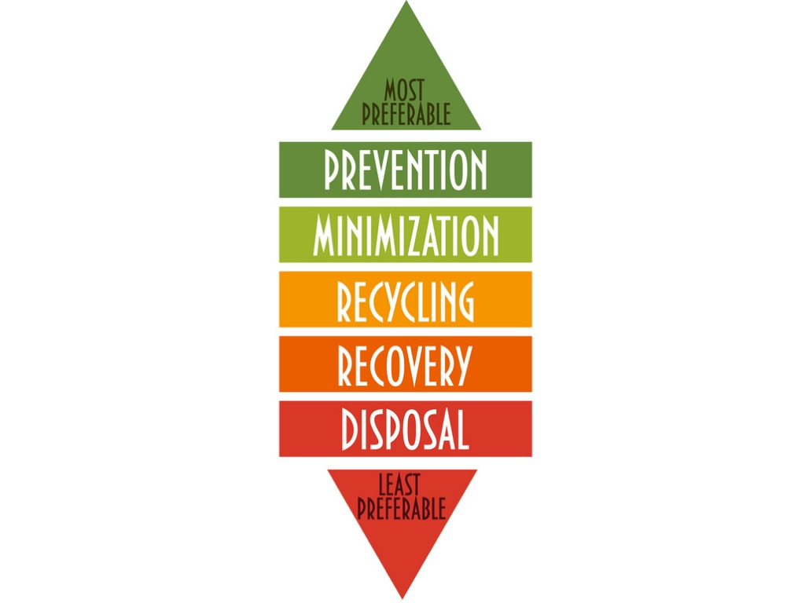
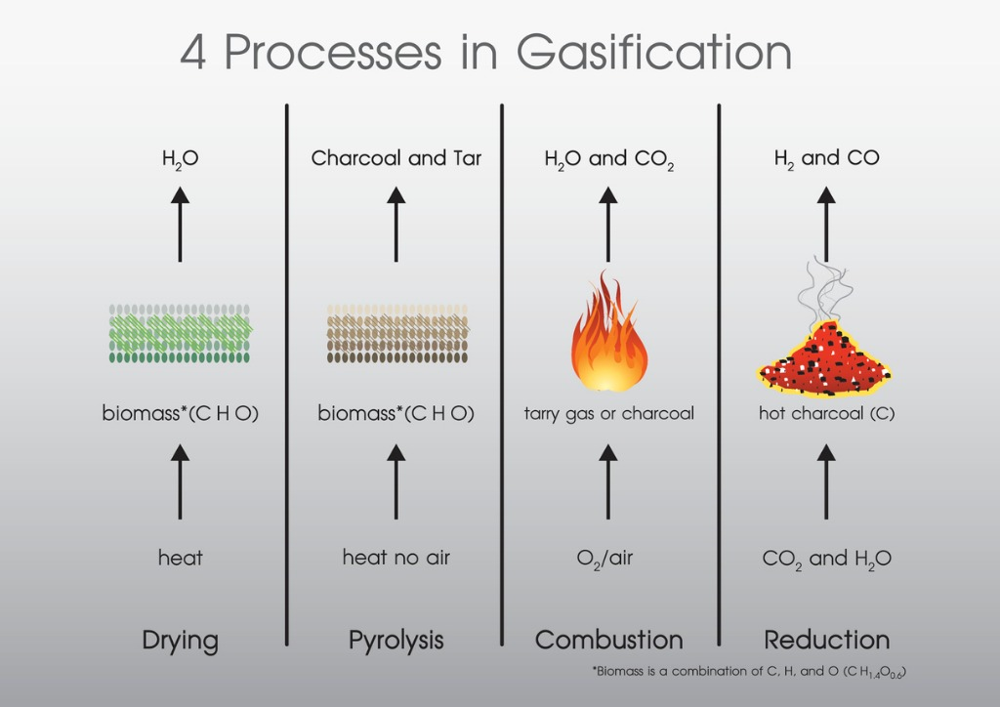
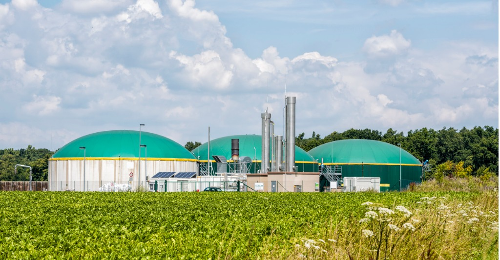

How green is waste-to-energy?
It’s important to place the idea of generating energy from waste in its proper context – and the waste hierarchy does this best. The waste hierarchy tool indicates an order of preference for actions to reduce and manage waste.It places energy generation (recovery) below reducing waste, re-use, and recycling and composting, meaning it’s those options that should be considered first when managing waste; but above waste disposal meaning that waste-to-energy is preferable to landfill.
How truly ‘green’ waste-to-energy is depends on the efficiency of the plant turning the waste into energy, and the proportion of the waste that is biodegradable. This affects whether the approach is considered to be ‘recovery’ or simply ‘disposal’ of waste.
There are number of ways of generating energy from waste. These include combustion, gasification, pyrolysis, anaerobic digestion and landfill gas recovery.

Combustion: Burning up what’s left behind
First up, combustion. This is where heat produced by burning waste produces heat, driving a turbine to generate electricity. This indirect approach to generation currently has an efficiency of around 15-27%, albeit with a lot of potential for improvements. Whether any approach to generating energy from waste can be considered sustainable depends on the ‘net calorific value’ of the waste going into the process. Where incineration of waste is concerned, that figure must be 7 MJ/kg, meaning the likes of paper, plastics and textiles are best suited to the combustion method of generating energy from waste.Of course, combustion produces emissions – 250-600 kg CO2/tonne of waste processed – but this is offset by the fact that fossil fuels don’t need to burned. There are, however, other pollutants emitted from combustion in the form of flue gas.
Gasification: waste’s a gas
Gasification, rather than being the business of driving turbines directly, is about the production of gas from waste. Our everyday rubbish, consisting of product packaging, grass clippings, furniture, clothing, bottles, appliances and so on, is not a fuel as much as the feed for chemical conversion at very high temperature. The rubbish is combined with oxygen and/or steam to produce ‘syngas’ – synthesised gas which can then be used to make numerous useful products, from transport fuels to fertilisers or turned into electricity.But a problem here is that gasification is often followed by combustion, leading to some of the same emissions issues as combustion. The same issue can apply to what happens after the pyrolysis of waste.
Gasification is also not a particularly efficient mechanism of producing energy, as the pre-processing requires a lot of energy and the reactors need to be closed down for regular cleaning.

Pyrolysis: no oxygen, no trouble?
Where pyrolysis is different from other methods listed so far is that decomposition of various solid wastes takes place at high temperature, but without oxygen or in an atmosphere of inert gases. This means the process requires lower temperatures, and has lower emissions of some of the air pollutants associated with combustion.It’s worth noting, however that Friends of the Earth doesn’t consider the energy generated through either gasification or pyrolysis as truly ‘renewable’ due to the fact that they release CO2 from both fossil fuel origins such as plastics and synthetic textiles as well as biological materials.
Tackling organic matter
Anaerobic digestion can be used to generate energy from organic waste like food and animal products. In an oxygen-free tank, this material is broken down to biogas and fertiliser.It’s an approach with big potential. If we treated 5.5 million tonnes of food waste this way, we’d generate enough energy to serve around 164,000 households while saving between 0.22 and 0.35 million tonnes of CO2, in comparison to composting.
Extracting the biogas produced by biodegrading materials on landfill sites is another way of getting useful energy from waste. Although it’s an approach that’s in decline due to the reduction of the amount of organic matter going to landfill, it’s making a notable contribution to UK energy supply: the source 3.04TWh of green electricity in the last year, in fact.

Tackling the plastic problem
Plastic waste has risen to significant levels of public consciousness in recent years, for its negative impact on habitats and species. In response, the UK Government’s 25-year Environment Plan pledges to eliminate all ‘avoidable’ plastic waste by the end of 2042 – and it’s not alone in making such political commitments. Can waste-to-energy step in here?Converting plastic waste to energy certain makes sense from a chemical perspective, given plastics come from the same origin as fossil fuels. We’ve already looked at the two main techniques involved: pyrolysis, where plastic is heated in the absence of oxygen, and gasification, where air or steam heats the waste, creating gases that either produce petrol or diesel, or are burned to generate electricity.
New techniques such as cold plasma pyrolysis, provide the potential to create fuels such as hydrogen and methane, as well as useful chemicals for industry.
But there are barriers in the way of wider uptake of plastic-to-energy techniques. Gasification of plastics requires significant investment, including advanced controls and pre-treatment facilities. Also, developing plastic-recycling plants presents a risk of limiting those facilities, when decision-makers may instinctively opt for waste strategies where general waste is processed together, rather than separating out different elements.
Novel approaches to waste management in the UK will surely rise in the coming years. Recycling rates seem to be plateauing, with only minor increases seen. While generating energy from waste has a lot of promise, we need to focus on making products last longer, and when they really can’t be fixed, finding ways to recycle and reuse them. Only when those options are exhausted should we turn to waste-to-energy.